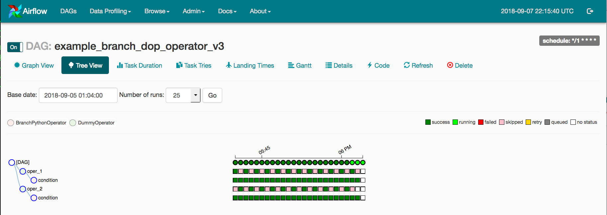
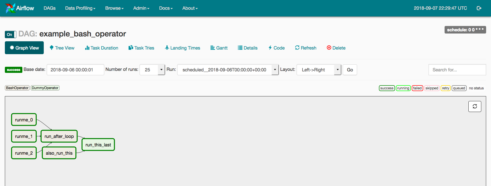

UI / Screenshots¶
The Airflow UI makes it easy to monitor and troubleshoot your data pipelines. Here’s a quick overview of some of the features and visualizations you can find in the Airflow UI.
DAGs View¶
List of the DAGs in your environment, and a set of shortcuts to useful pages. You can see exactly how many tasks succeeded, failed, or are currently running at a glance.

Tree View¶
A tree representation of the DAG that spans across time. If a pipeline is late, you can quickly see where the different steps are and identify the blocking ones.

Graph View¶
The graph view is perhaps the most comprehensive. Visualize your DAG’s dependencies and their current status for a specific run.

Variable View¶
The variable view allows you to list, create, edit or delete the key-value pair of a variable used during jobs. Value of a variable will be hidden if the key contains any words in (‘password’, ‘secret’, ‘passwd’, ‘authorization’, ‘api_key’, ‘apikey’, ‘access_token’) by default, but can be configured to show in clear-text.

Gantt Chart¶
The Gantt chart lets you analyse task duration and overlap. You can quickly identify bottlenecks and where the bulk of the time is spent for specific DAG runs.

Task Duration¶
The duration of your different tasks over the past N runs. This view lets you find outliers and quickly understand where the time is spent in your DAG over many runs.

Code View¶
Transparency is everything. While the code for your pipeline is in source control, this is a quick way to get to the code that generates the DAG and provide yet more context.